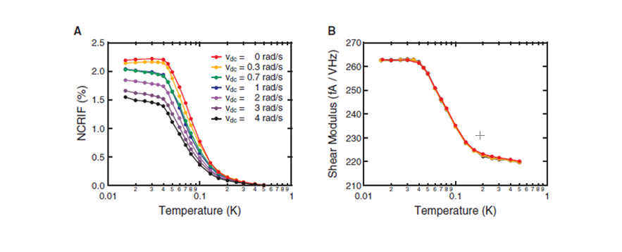

Report by Subjects
Report by Subjects
KAIST RESEARCH ACHIEVEMENTS
The Discovery of Supersolidity and Verification of Its Existence.
Professor (Department of Physics) Eunseong KIM
Summary
The Center for Supersolid and Quantum Matter Research collaborated with RIKEN to verify the existence of "supersolidity". In 2004, Center Head Professor Eunseong Kim first discovered this novel quantum mechanical phase of matter, which exhibits properties that are different from conventional gases, liquids, and solids. After his discovery, there was debate as to whether he misinterpreted the elastic modulus change as supersolidity. This study concluded the controversy and revealed the existence of supersolidity.
R&D Report
As a PhD student in the Physics Program at Penn State University, Professor Eunseong Kim discovered a new phenomenon in solid helium that runs contrary to common understanding. This phenomenon can be better understood through an everyday life analogy. Imagine a round cup filled with jelly. When you hold the cup and rotate it around, the material inside the cup rotates as well. This takes place because viscosity is applied between the surfaces of the cup and jelly. However, if the material inside the cup is in a state of what was coined as "superfluidity" by physics researchers, then the material's viscous property disappears. This state of superfluidity can be observed in liquid helium when it is cooled to low temperatures (approximately 2 K). Professor Kim's experiment is very similar to the example above.
One difference is that, instead of rotating the round cup, a torsional oscillator was used to provide consistent oscillation in a rotational manner. The other difference is that, instead of liquid, Professor Kim used only solid helium. If solid helium, like liquid helium, demonstrates the phenomenon of superfluidity, where viscosity does not exist, then solid helium would separate itself from the oscillations and cease to move regardless of how much oscillation is given through the torsional oscillator. In Professor Kim's experiment, solid helium was cooled on a torsional oscillator to unnatural conditions of approximately 0.2 K. As a result, the amount of solid helium that oscillated with the torsional oscillator was substantially reduced. This study turned common physics knowledge upside down by revealing that parts of solid helium showed characteristics similar to that of superfluidity. Professor Kim coined the term "supersolidity" to describe this seemingly mutually exclusive yet co-existing characteristic of solid helium. Putting an end to the controversy behind the existence of supersolidity Professor Kim prepared a new experiment by utilizing two new experimental apparatuses to put an end to the controversy surrounding supersolidity. First, through collaborative research with Japan's RIKEN, he decided to use a rotating cryostat to conduct the experiment. The reason for employing a rotating cryostat was simple. Commonly, superfluidity involves a special property where if rotation speed is increased, the amount of superfluid is reduced. If solid helium truly possessed superfluidity, meaning if supersolidity really exists, then the amount of supersolidity will be reduced if the rotation speed is increased. On the other hand, an increase in rotation speed using the rotating cryostat should not cause any difference due to the elastic modulus of solid helium. Therefore, if the experimental results in 2004 were due to the elastic modulus of solid helium, as some physicists had critiqued, then varying degrees of rotational speed would not change the amount of supersolidity. In order to find supporting evidence for his hypotheses, Professor Kim designed a new torsional oscillator that can simultaneously measure the amount of supersolidity and the elastic modulus of solid helium. Prior studies were burdened by limitations in comparative analysis, because they were only able to separately measure the amount of supersolidity and elastic modulus. On the other hand, the correlation between these two variables could be seen clearly by simultaneously measuring both of them with the same solid helium. If Professor Kim misunderstood the elastic modulus of solid helium as supersolidity, then the tendency of change between the two variables would be the same based on the rotation speed of the rotating cryostat.

Also, if the elastic modulus of solid helium did not change with the same tendency as the amount of supersolidity when the rotation speed is changed in the rotating cryostat, then it could be concluded that the two variables are independent phenomena with different causes. In 2010, the collaborative KAIST-RIKEN research team confirmed that the two are indeed different phenomena. They verified once again that solids possess properties of superfluidity, thereby concluding the controversy behind the existence of supersolidity.
Implications and Future Prospects
 Pic 2.The new torsional oscillator that can measure both resonant periods and elastic modulus. Attached to this oscillator is a piezoelectric transducer that can measure the elastic modulus.
Pic 2.The new torsional oscillator that can measure both resonant periods and elastic modulus. Attached to this oscillator is a piezoelectric transducer that can measure the elastic modulus.
 Pic 3. Study results published in Science. When the rotational speed of the rotating cryostat is increased, the NCRI, which reveals the amount of supersolidity (the amount of reduction of rotational inertia is proportionate to the amount of supersolidity) is reduced (left). This is the main property of superfluidity. However, the elastic modulus is not influenced by the rotational speed (right). (H. Choi et al., Science 330, 1512 (2010))
Research Funding
ㆍCreative Research Initiatives (funded from National Research Foundation of Korea) Center for Supersolid and Quantum Matter Research
Publication
ㆍH. Choi, D. Takahashi, K. Kono and E. Kim, Science 330, 1512 (2010)
Related Works
ㆍ'Supersolidity', a New Material That Transcends Gas, Liquid, and Solid" (Science and Technology , January 2011, p. 36)